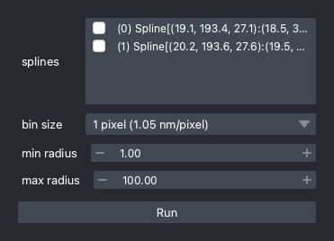
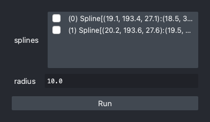
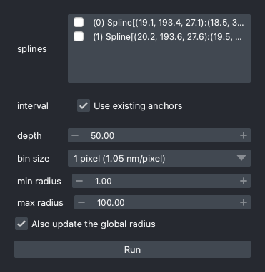
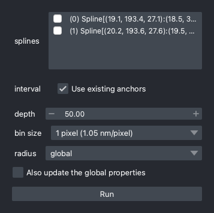
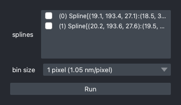
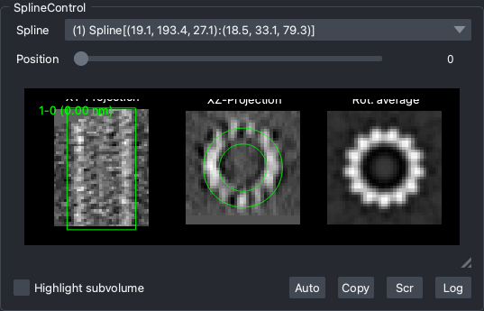
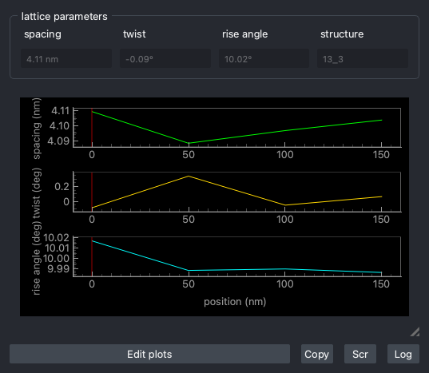
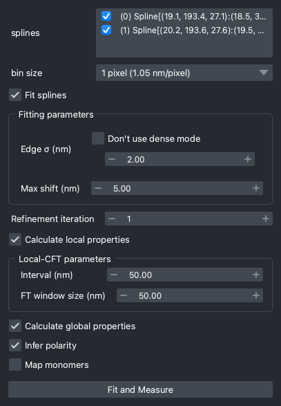

Measure Lattice Parameters
In this section, we will see how to measure the lattice parameters and store the results
in the Spline object.
Estimate the Radius
The global radius
API: measure_radius
GUI: Analysis > Radius > Measure radius
To run many of the lattice analyses, you have to know the size of the cylinders. This is the simplest method to estimate the radius using the radial profile of sampled sub-volumes along the spline. This method should only be used if the radius is almost constant along the cylindric structure.

List of parameters
- The registered splines should be shown in the top "splines" row.
- Available bin sizes are shown in the "bin size" combo box. Since peak detection is performed by calculating the centroid, scaling down does not affect a lot. usually ~0.5 nm/pixel is enough.
- "min radius" is the minimum radius to be considered as a valid peak.
After this estimation, the radius is stored as a global property of the spline. It is
available in the spline properties.
spl = ui.splines[0] # the first Spline object
print(spl.props.get_glob("radius")) # print the global radius of the spline
print(spl.radius) # a shorthand for spl.props.get_glob("radius")
If the estimated value is not appropriate
- If you forgot to invert the image, this step will be the first step that the result goes wrong. Make sure the image is inverted.
- This method uses the radial profile of the raw intensity values. If the cylinder
structure is coated with dense components inside and/or outside of the cylinder,
the result will be affected. If there's any a priori knowledge about the radius,
you can set it manually with
set_radiusmethod.
Note
If the cylinder structure is supposed to change, you may want to measure local radius.
Set global radius manually
API: set_radius
GUI: Analysis > Radius > Set radius
If you already know the radius, or the rule to calculate the radius, you can set it manually. If the latter, you'll use the expression system.

List of parameters
- The registered splines should be shown in the top "splines" row.
- "radius" is the radius in nm. If a scalar is given, radii of all the selected splines will be updated with the same value. If an expression is given, radius values will be calculated by evaluating the expression using the global properties of the spline.
set radius using an expression
Calculate the radius based on the number of protofilaments.
ui.set_radius(splines=[0, 1], radius="col('npf') * 0.78")
The replace method is useful to map the number of protofilaments to the radius value.
ui.set_radius(splines=[0, 1], radius="col('npf').replace({13: 10.0, 14: 11.0})")
The local radius
API: measure_local_radius
GUI: Analysis > Radius > Measure local radius
In some cases, the radius is not constant. This method will measure the radius of each sub-volume along the spline and store it as a local property of the spline.

List of parameters
- The registered splines should be shown in the top "splines" row.
- "interval" is the sampling interval in nm. If you already analyzed some local parameters, the spline should be tagged with the anchors. In this case, you can directly use the anchors instead of manually setting this value.
- "depth" is the size of sub-volumes in nm parallel to the spline.
- Available bin sizes are shown in the "bin size" combo box. Since peak detection is performed by calculating the centroid, scaling down does not affect a lot. usually ~0.5 nm/pixel is enough.
- "min radius" is the minimum radius to be considered as a valid peak.
- If you want to update the global property of "radius" by the mean of local radius, check the "Also update the global radius" checkbox.
Infer Polarity
API: infer_polarity
GUI: Splines > Orientation > Infer polarity
Many biological filamentous structures have polarity. This feature usually needs to be determined by subtomogram averaging, but in some cases we can undoubtedly distinguish the polarity by seeing the chirality of the molecules.
In cylindra, an automatic polarity inference method is implemented. This method works
very well for microtubules, using the fact that clockwise appearance of tubulin
molecules corresponds to the minus-to-plus direction. Theoretically, it should also
work for other helical structures such as actin filament, but it's not guaranteed.
Note
If the polarity is not inferred correctly, you can set it manually using the
set_spline_props method.
Running CFT
CFT (cylindric Fourier Transformation) is a method introduced in our work to measure the local and global lattice parameters of microtubules. It composed of following steps:
- Coordinate transformation from the Cartesian coordinate \((z, y, x)\) to the cylindrical coordinate \((r, y', \theta)\).
- 3D Discrete Fourier Transformation around the peak locations with up-sampling. The expected peak locations are defined in the spline configurations.
- Project the 3D cylindric power spectrum to \((y', \theta)\). The peak frequencies are used to calculate the lattice parameters.
Note that the \(y'\) coordinate is parallel to the spline in the Cartesian coordinate. If the tilt axis of your tomogram is \(y\), you should have drawn splines almost parallel to the \(y\) axis. Therefore, you can assume \(y \approx y'\).
Why not FFT?
The FFT (Fast Fourier Transformation) is a widely used algorithm to calculate the Fourier Transformation very efficiently. However, FFT is not suitable for up-sampling because it results in a very large output image (10× up-sampling in two axes results in a 100× larger image). In this case, discrete Fourier transformation is must faster and more memory efficient.
After the radius is estimated, you can run CFT to measure the lattice parameters.
local-CFT
API: local_cft_analysis
GUI: Analysis > Local CFT analysis
Local-CFT is a CFT analysis performed by building local cylindric coordinate systems along the spline. The local coordinate system is "straight"; the \(y'\) axis is not curved when it's viewed in the Cartesian coordinate system.

List of parameters
- The registered splines should be shown in the top "splines" row.
- "interval" is the sampling interval in nm. You can use existing spline anchors if you already have ones, such as after running "Measure local radius".
- "depth" is the size of sub-volumes in nm parallel to the spline (\(y'\) axis).
- Available bin sizes are shown in the "bin size" combo box. Since power spectra will be up-sampled, ~0.5 nm/pixel is usually enough.
- If you want to build local cylindric coordinate systems using the global radius, the "radius" parameter should be "global". Change to "local" if you'll use the local radius.
- If you want to update all the global properties, check the "Also update the global properties" checkbox.
After local-CFT, the spline local properties are updated. You can access them as a
DataFrame by:
ui.splines[0].props.loc
shape: (3, 8)
rise_angle rise_length pitch npf start
--- --- --- --- ---
f32 f32 f32 u8 i8
9.999075 0.944843 4.099899 13 3
10.028508 0.947809 4.099899 13 3
10.003416 0.945541 4.095563 13 3
... or as a series:
ui.splines[0].props.get_loc("rise_angle")
shape: (3,)
Series: 'rise_angle' [f32]
[
9.999075
10.028508
10.003416
]
global-CFT
API: global_cft_analysis
GUI: Analysis > Global CFT analysis
Unlike local-CFT, global-CFT builds a distorted cylindric coordinate system; The \(y'\) axis is exactly the spline. This coordinate mapping will straighten the lattice, which makes it possible to measure the average lattice parameters.

List of parameters
- The registered splines should be shown in the top "splines" row.
- Available bin sizes are shown in the "bin size" combo box. Global-CFT uses a a very long region, you can use larger bin sizes.
This method will update the global properties of the spline. You can access them similarly.
ui.splines[0].props.glob
radius orientation rise_angle twist npf start
--- --- --- --- --- ---
f32 str f32 f32 u8 i8
11.086255 MinusToPlus 10.027519 0.036526 13 3
... or as a scalar:
ui.splines[0].props.get_glob("rise_angle")
10.027519226074219
Properties of the Splines
After running CFT, splines will have the following properties:
"rise_angle""rise_length""pitch""spacing""skew_angle""twist""radius""npf""start""orientation"(global only)

Sweep along the Splines
After running local-CFT, you'll find the GUI being updated.
In the "Spline Control" panel, you can check the fitting results by seeing the projections of each sub-volume along the spline.

Local lattice parameters are plotted in the "Local Properties" panel. You can interactively see the profiles in the figures.

Run this workflow easily
The "fit → refine → measure radius → CFT" workflow can be quickly run from the toolbar, or F2 key.

Manually set parameters
API: set_spline_props
GUI: Splines > Set spline properties
This method is useful when you want to set the protofilament number, start number and/or orientation of the splines manually, especially when the automatic inference fails but you are sure about the values.